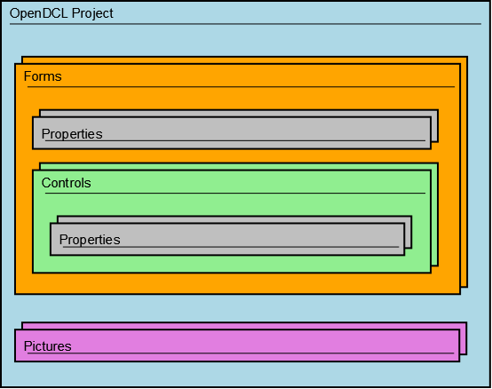

The AutoLISP interface exposed by OpenDCL Runtime employs concepts borrowed from object oriented programming, but strictly speaking, AutoLISP is not object oriented. Nevertheless, there is an underlying OpenDCL object model, and it's helpful to understand this model when programming for OpenDCL. The convention used by OpenDCL for calling object methods is to specify the object instance as the first argument to the method function.
OpenDCL objects are represented in AutoLISP as entity names (an entity name is just a memory pointer that points to the object instance). When an OpenDCL project is loaded, OpenDCL automatically sets AutoLISP symbols for each form defined in the project. While a form is active, OpenDCL sets AutoLISP symbols for each control on the form. The VarName property of forms and controls determines the name of the AutoLISP symbol used to reference the object. For example, showing a form is accomplished by calling the Form-Show method with the form handle as the first argument:
(dcl-Form-Show Project1/Form1)
In this example, Project1/Form1 is an AutoLISP symbol that is automatically set by OpenDCL to point to the form when the project is loaded.
OpenDCL Object Model
The basic OpenDCL object type exposed to AutoLISP is the control. Internally, forms are a special type of control, so control methods typically apply to forms as well. The other fundamental object exposed by OpenDCL is the project. OpenDCL also exposes specialized objects like the ImageList, BinFile, and AxObject. Each of these object types have their own methods that can be called using the following calling format:
(dcl-METHODNAME <OBJECT> ARGUMENTS)
Every control contains a list of properties. Different types of controls contain different properties, but all controls of a given type contain the same properties. Some controls, like ActiveX controls, may contain additional properties that are exposed separately from the built in OpenDCL properties. Properties are not exposed as independent objects; instead they are accessed through their owning control by name, using the following convention (where PROPERTYNAME is the property API name):
(dcl-Control-GetPROPERTYNAME <CONTROL>) (dcl-Control-SetPROPERTYNAME <CONTROL> NEWVALUE)
Alternatively, properties can be accessed via the generic Control-GetProperty and Control-SetProperty methods.
OpenDCL Project Structure
As the following hierarchy diagram shows, an OpenDCL project contains forms and pictures. Forms contain properties and controls. Controls also contain properties. OpenDCL Runtime is designed to allow an unlimited number of projects to be loaded simultaneously, so that multiple independent OpenDCL applications can function inside AutoCAD without interfering with each other.

OpenDCL Control Handles
Controls (and forms) are referenced in AutoLISP code by AutoLISP symbols that contain a handle for the control. These symbols are automatically created in the AutoLISP namespace of every AutoCAD drawing while an instance of a form is active. The default AutoLISP symbol name for this handle is constructed by concatenating the project key, form name, and control name, all separated by a forward slash character, as in this example:
((dcl-Control-GetName ProjectKey/FormName/ControlName)
This default symbol name can be overridden by setting the control's VarName property, but using the default naming convention is recommended to minimize the risk of symbol name collisions between applications.
Controls and forms can also be referenced by specifying their project hierarchy path in the form of strings, as in this example:
(dcl-Control-GetName "ProjectKey" "FormName" "ControlName")
The lisp symbol method only works while the control's form is active, however the string method can be used to refer to any loaded control even when its form is not active. The string method is also useful when performing the same operation on a list of controls, as in this example:
(foreach control '("Control1" "Control2" "Control3") (
dcl-Control-SetEnabled "ProjectKey" "FormName" control NIL))